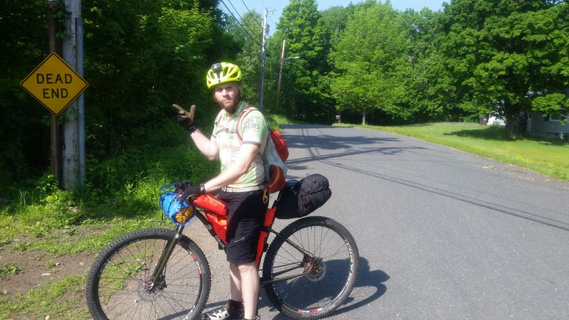
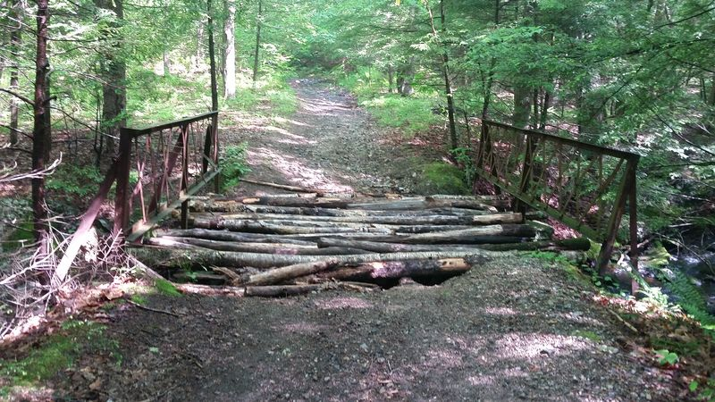
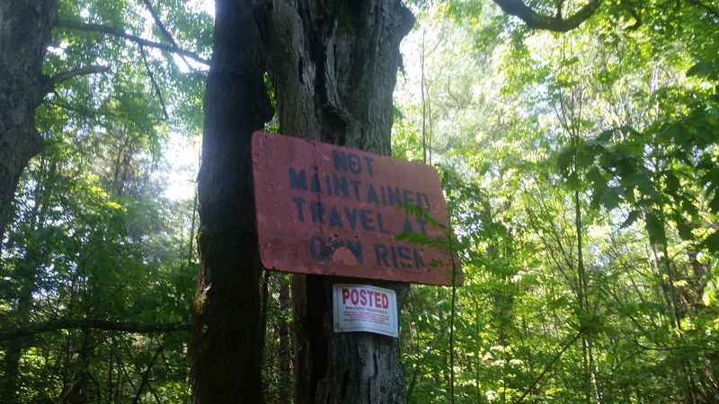
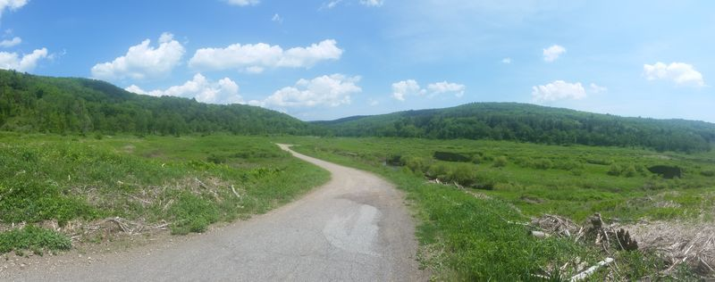
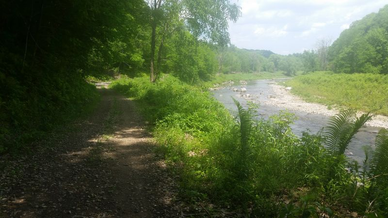
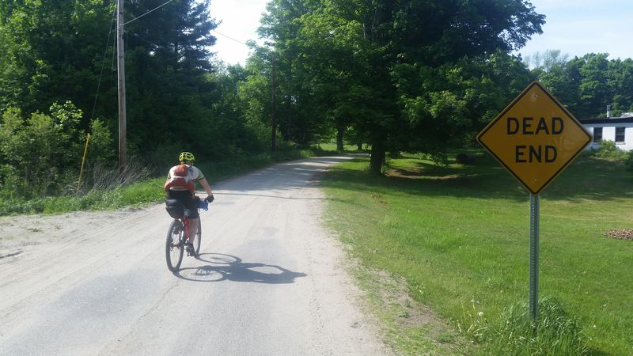
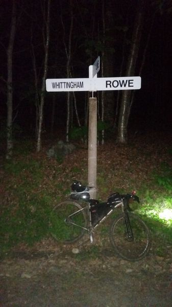

The morning started off quick. Alarm, final gear check, grab some Dunkin (this is Massachusetts after all) on the way out of town. I dropped by to pick up Pat and he was ready to roll. Everything went just as another trip on the bike out in the woods. This was going to be an awesome weekend.
We parked near the Massachusetts/Connecticut border and biked down to the start of the Cross Massachusetts Trail (XMAT). The XMAT has been on my mind since riding the Cross Vermont Trail (XVT). Why not be able to ride to the start from Massachusetts trails? I've been routing backwoods trails all around the area, but nothing that really made sense to connect to the XVT. With a little motivation from reading about the Eastern Divide Project I started more serious planning. After hours and hours of tweaking lines on a map, consulting with riders in the area, and speculating we were finally ready to experience the ride.
We buzzed along the pavement rail trail with the roadies, triathletes, recreational riders, and runners. I can't imagine how ridiculous we looked on our singlespeed mountain bikes spinning along with all this gear attached... A few funny looks later and a quick jaunt across the city and we were at the first dirt section without any audience. The awaiting descent paired with a dead end sign made us question our decisions, but we rolled.
Having only ridden the area of the final 20 or so miles of the route I was experiencing everything for the first time. Climbing pebbly double track through the warm morning mist and taking in the views was a perfect introduction. Knowing that some hours from now I'd be crossing the Vermont border only by following a small line winding across Massachusetts had me pretty excited. We navigated the small damp boulders that the trail had turned to favor and even survived "the sketchy bridge".. even if it did try to fall apart on me while crossing.
We climbed out of the first trail section and back into the sunlight to a gravel road through a clearing. We turned around to take a look at the trail we left and noticed a sign which would be a sign of good things to come for the rest of the trip. "NOT MAINTAINED TRAVEL AT OWN RISK". To translate, this sign guarantees a good time will be had on this road. These signs popped up here and there on the route and never failed to give us a good ride, but for now we had some maintained pavement roads to climb.
I'm not much for road riding and would much rather go play in the woods. I'll ride with friends and social groups, but generally I enjoy the scenery and wildlife that really is only seen tucked away from civilization. These roads were an exception. I had to remark to Pat that I would never be out to ride these roads in general due to their location, but I was DEFINITELY missing out. The pavement curved along a brook and through bright green fields of early spring growth. OK.. maybe I should get on the road bike sometime.
After a not so awesome (tough) pavement climb we rolled down into the next trail section. I had high hopes for this area as it was recommended by multiple people and well known even to my co-workers who I briefly chatted with regarding the route. The view was overwhelming with swooping gravel through a wide open field all outlined by the towering hills that made up the river valley.
This transitioned into 10 miles of perfect double track that twisted along with a stony river. There were perfect swimming holes at every turn and there were quite a few people out to take advantage of them on the 97 degree day. We tucked in and out of the shade on the trails but before long the heat caught up and it was time to take a dip in the river ourselves.
I tried to take in as much of the beauty as possible with special attention to the unique rock formations. Giant boulders were turned sideways and you could see the stacked layers that had slowly been added to each other. The perfectly straight lines of these layers were then carved out by the rushing water to display shapes that you'd expect to see in a technical computer model. Is this really in the same state that I live in, yet I haven't experienced this?!

We cut through another "Dead End" that turned into perfectly unmaintained trails and then eventually back to pavement. At about halfway through the route we dropped in for lunch at a local Co-op and had a lackluster burger.. but it had the calories to help push on. We maybe slightly forgot about "Mt. Road", the appropriately named climb, that was right after our lunch stop. This climb managed to tip the energy levels a bit and let us know that we had indeed been riding for a few hours.
The next section of this route would be a bit of gravel linking up to the more gnarly terrain that the north portion of the route had waiting for us. We slowly climbed up muddy access roads, and linked some worn in singletrack through state forests. The closer we got to the portion of the route that I'm familiar with, the rougher the terrain got. I started to doubt that my experience in this area was really the best idea. This was all slightly pushed aside when we reached the epic descent of the day. This 5 mile descent into the next town was plenty to put a smile on our face before the final push to the finish.
The smile would later be replaced by grumbles and aches caused by some routing complications. Previously ridden trails had been left to be overgrown and reroutes that looked good on the Garmin turned into dead ends and tons of extra elevation. Movement alternated between hiking and slow grind pedaling up steep grades on main access roads just hoping for something to turn us out to the road we needed to connect. Eventually we lost light in these woods and decided to backtrack.
The disappointment of this mix up really hit hard. I wanted to reach the Vermont border tonight. I had planned on reaching it and my mind was really set on this. I was mentally beat about this, but Pat was physically beat from the whole ordeal. He was done riding for the day and our hill climbing turned into walking out of the woods onto a secondary gravel road reroute.
We finally made it back to the intended route and rolled down a gravel hill only to be met with the final climb. When Pat told me he couldn't climb anymore and asked me how much more elevation I checked my Garmin. The elevation graph just ran off the top of the screen and seemed to continue on forever. The final 7 miles were straight up, and there was no way to change this.
We decided to pick a camp spot and I'd head up to the border and come back down to camp. We'd later find out that we camped next to a bear in it's den... but this is about the route and all the wildlife encounters are enough for their own story... I rode out the final climbs and as I turned onto the last roads I started recognizing the landmarks nearing the XVT start. I was really about to cross the border! I rolled up to the finish at about 10:30pm to an uneventful and pitch black hill crest. I snapped a shot of the sign and my bike then a rough looking selfie.
I sent off a text to Kait, my usual bikepacking partner, with my border selfie and one to Pat to let him know I was heading back to camp. I swapped my now dimming headlight for the freshly charged handlebar light and bombed back down to camp. After a day of riding, navigating, and rerouting I had no more obligations. I basked in the completion of dots on a map, to lines connecting them, to a day spent in the saddle ready to experience whatever got thrown at me - and owning it.
For up to date info on this route or other info please check out New England Bikepacking and the Facebook page for the XMAT bikepacking route!